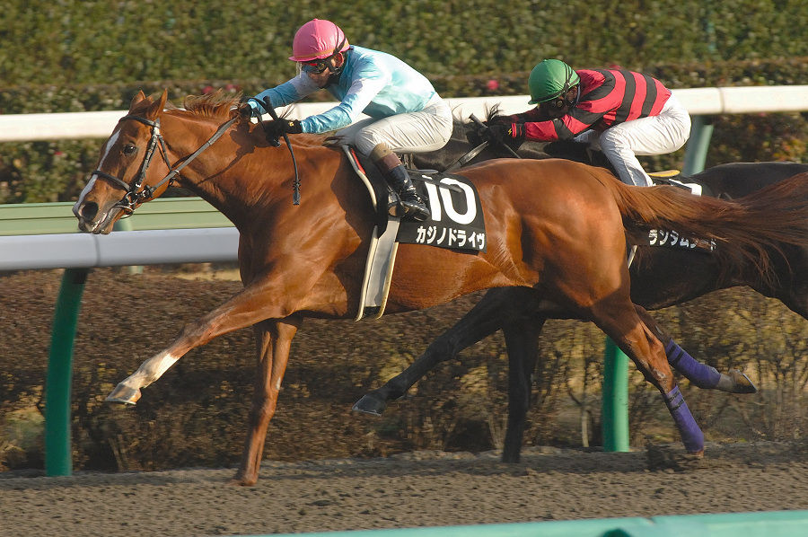

「世界を震撼させた驚愕の2戦目」砂の超特急
カジノドライヴ

米G1馬2頭を兄姉に持つ超良血馬。日本での新馬戦を歴史的大差で圧勝すると、続く2戦目で海を渡り、米G2ピーターパンSを圧勝。ベルモントS直前の無念の出走断念など、波乱に満ちた現役生活でしたが、そのポテンシャルは間違いなく「世界基準」であったダート界の超新星です。
基本データ
- 主な鞍上： 藤岡佑介、E.プラード、V.エスピノーザ
- 獲得賞金：約1億8000万円
- 通算成績： 11戦4勝
- 脚質： 先行
-
血統（父母）：
- Mineshaft
- Better Than Honour
能力パラメータ
※独自解析による競走能力アーカイブ
全戦績
| 年 | レース名 | 着順 | 着差 | 鞍上 |
|---|---|---|---|---|
| 2008 | 3歳新馬 | 1着 | 11馬身(2.2秒) | 藤岡佑介 |
| 2008 | ピーターパンS(米G2) | 1着 | 5 3/4馬身 | E.プラード |
| 2008 | BCクラシック(米G1) | 12着 | 3.6秒 | V.エスピノーザ |
| 2009 | アレキサンドライトS | 1着 | 1/2馬身 | 安藤勝己 |
| 2009 | フェブラリーS | 2着 | クビ | ビュイック |
| 2009 | ドバイワールドC(首) | 8着 | 1.9秒 | 安藤勝己 |
| 2010 | マイルCS南部杯 | 11着 | 3.3秒 | 三浦皇成 |
| 2010 | 武蔵野S | 12着 | 1.6秒 | 後藤浩輝 |
| 2011 | マイルCS南部杯 | 14着 | 2.0秒 | 福永祐一 |
| 2011 | アルデバランS | 3着 | 0.1秒 | 内田博幸 |
| 2011 | JBCクラシック | 取消 | - | 岩田康誠 |
主な産駒（子供たち）
- ヴェンジェンス
- コウエイタケル
- メイショウカズサ
※産駒にも自身のスピードとパワーを色濃く伝えています
伝説の瞬間：幻のベルモントステークス
ピーターパンSでの歴史的圧勝を受け、米国三冠最終戦ベルモントSでは単勝1番人気（前売り）に支持されたカジノドライヴ。しかし、当日の朝に挫跖（ざせき）を発症し、無念の出走取消。もし走っていたら、日本調教馬による米クラシック制覇という歴史が変わっていたかもしれない――今も語り継がれる「競馬史に残るIF」の一つです。